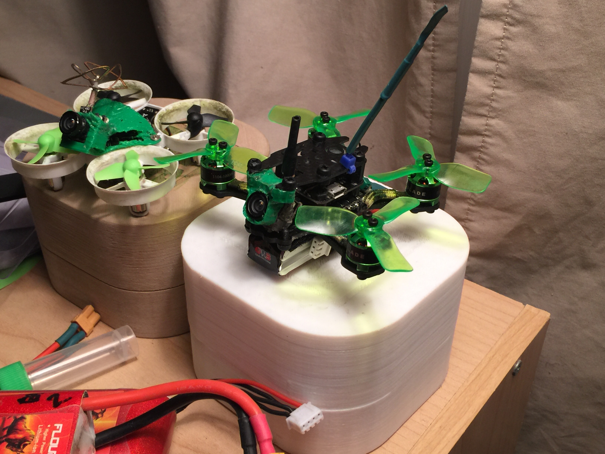
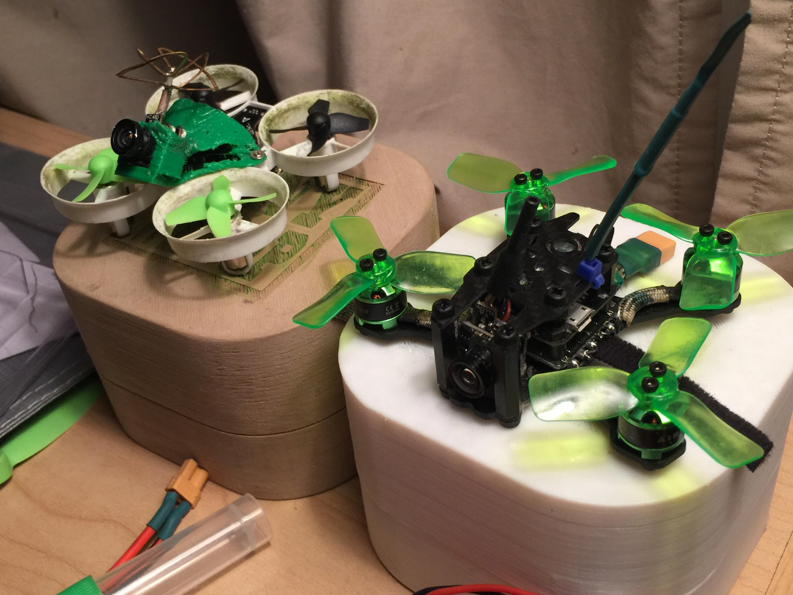
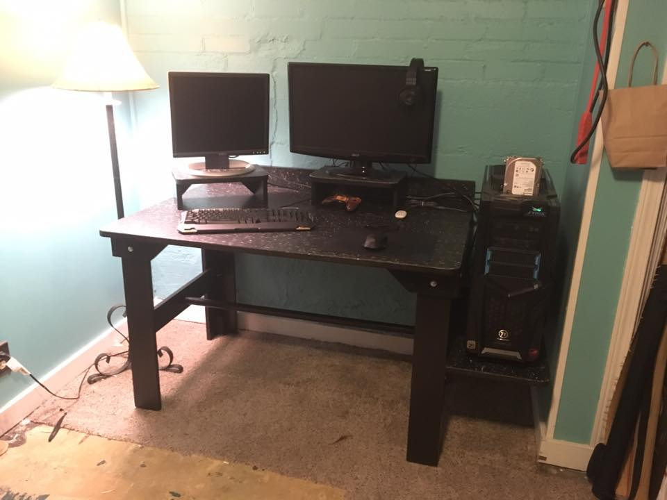
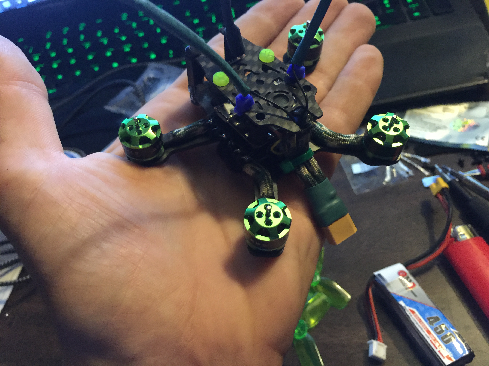
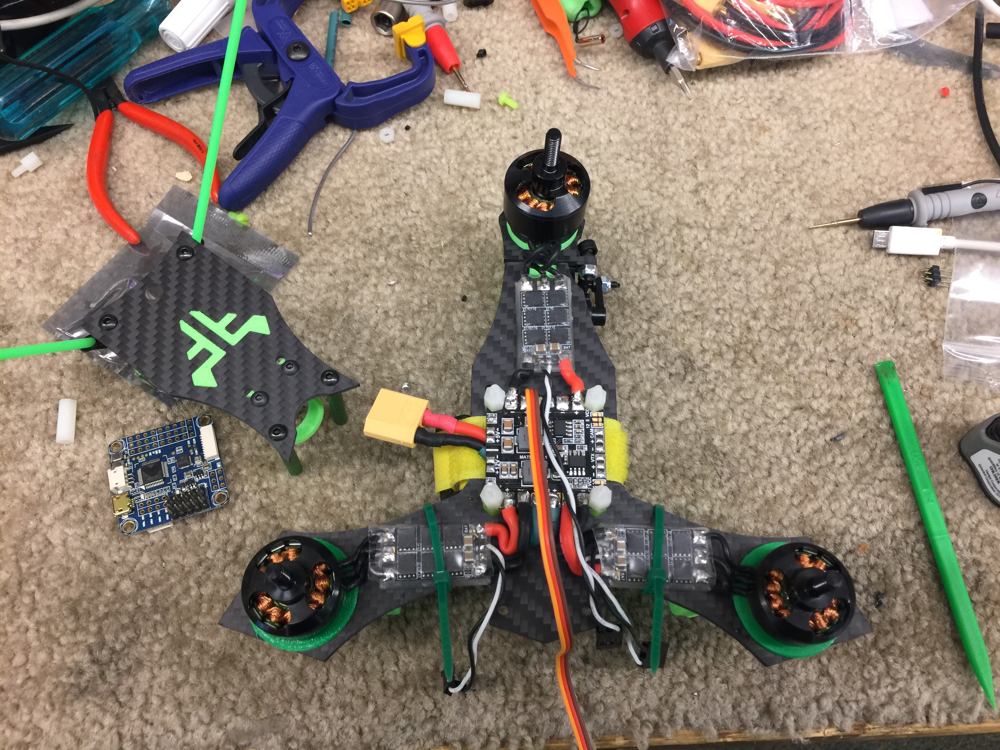

Our Recent Posts
-

Aug 14, 2017Atom mini 83: Flight TimeAtom 83 Mini flight time, tuning batteries 5-6-7. Still has a tendency to pull hard near full throttle, but it's getting close. -

Jul 31, 2017GammaAtom Update: camera mountUpdate on the GammaAtom: the standard Atom V2 camera mount worked for the Mini 83mm after all — just flip it 180 degrees. -

Jul 31, 2017Sturdy Work Desk ProjectMy stepson asked for a new desk. He got a serious battlestation. -

-

-
 Jul 15, 2017ReMaidening the Scorpion.Spent some time this week rebuilding my Foxflite Scorpion. Here's the maiden after putting her back together.
Jul 15, 2017ReMaidening the Scorpion.Spent some time this week rebuilding my Foxflite Scorpion. Here's the maiden after putting her back together. -

Jul 15, 2017Scorpion rebuild..Rebuilding the scorpion. Spent time this week rebuilding it — figured it'd be good for a test post. -